library(tidyverse)
hmsidwR::infectious_diseases %>% names
#> [1] "year" "location_name" "location_id" "cause_name"
#> [5] "Deaths" "DALYs" "YLDs" "YLLs"
#> [9] "Prevalence" "Incidence"8 Essential R Packages for Machine Learning
Learning Objectives
- Gain an overview of essential R packages for modelling and data analysis
- Apply various modelling frameworks using appropriate R tools
- Learn how to discover and evaluate new R packages for specific analytical tasks
This chapter provides an overview of the most suitable R-packages for machine learning. It also discusses the combination of packages and functions to achieve the desired results. Additionally, it explores how to find new R-packages and evaluate their suitability for a given task.
8.1 Inside and Outside of the Library Boxes
When it comes to R, the possibilities are endless. With over 15,000 packages available on CRAN (Comprehensive R Archive Network) and countless others on GitHub and other repositories, the universe of available packages is vast. How to untangle among all of them? Which one to choose? Sometimes, it is rather favourable to start by working out of the library boxes, which means using functions provided in the built-in packages inside a fresh R installation.
However, the vast majority of the time, the best way to start is by using the packages that are already available in the R ecosystem. These packages are designed to make your life easier by providing pre-built functions for common tasks. They can help you save time and effort by automating repetitive tasks and streamlining complex analyses.
Life has become easier with the advent of wrapping functions and the reduction of lines of code through the use of functions found in packages. In the past, data analysis and modelling required extensive coding, often involving repetitive tasks and lengthy scripts. As a result, users can achieve sophisticated results more efficiently, without the need to write lengthy and intricate scripts from scratch. This shift has not only simplified the process of data analysis and modelling but has also democratised access to advanced statistical techniques, making them more accessible to a broader audience.
8.2 Essential R Packages for Machine Learning
Some of the most used modelling packages that are particularly useful for machine learning modelling of the spread of infectious diseases and evaluating DALYs variation due to infectious disease include:
8.2.1 Meta-Packages
{tidymodels}:1 This framework provides a collection of packages for modelling and machine learning tasks, including {tidyr}, {dplyr}, and ggplot2. It offers a consistent and tidy workflow for data preprocessing, model building, evaluation, and visualisation.{caret}:2 The caret framework (short for Classification And REgression Training) provides a unified interface for training and evaluating machine learning models. It supports a wide range of algorithms and offers convenient functions for hyperparameter tuning and model selection.{mlr3}:3 This is a modern and extensible framework for machine learning. It provides a unified interface for modelling tasks, making it easy to train and evaluate a wide range of machine learning algorithms.
8.2.2 Engines
Engines are the actual implementations of machine learning algorithms. They perform the computations necessary to train and evaluate models. Engines can be integrated into various meta-packages/frameworks to leverage their specific algorithms and computational efficiencies. Each engine might have its own set of parameters and functionalities, which can be accessed through the high-level interfaces provided by meta-packages.
{randomForest}: For random forest models.{xgboost}: An optimised distributed gradient boosting library designed to be highly efficient, flexible, and portable. It implements machine learning algorithms under the gradient boosting framework.{glmnet}: For lasso and ridge regression. Provides efficient procedures for fitting generalised linear models via penalised maximum likelihood.{nnet}: For neural networks.{kernlab}: For kernel-based machine learning methods.{e1071}: For support vector machines and other functions.{lme4}: For linear and generalised linear mixed-effects models.{mgcv}: For generalised additive models.{rpart}: For recursive partitioning and regression trees.{h2o}: A powerful machine learning framework that can be efficiently integrated with{tidymodels}.{h2o}offers a range of machine learning algorithms, including linear models, tree-based models, and ensemble methods, with efficient handling of large datasets and support for parallel computing.{keras3}, the R interface to Keras, is a deep learning technique which provides high-level neural networks API written in Python. Designed to enable fast experimentation with deep learning models on top of{tensorflow}(an open-source machine learning framework developed by Google).
8.2.3 Time Series Analysis
{forecast}: For forecasting functions.{prophet}: Specifically designed for time series forecasting with an emphasis on flexibility and ease of use. Developed by Facebook, prophet can handle various time series patterns, including seasonality, holiday effects, and trend changes, making it suitable for modelling infectious disease trends over time.{fpp3}:4 This package is part of the Forecasting: Principles and Practice (3rd edition) book, offering data and tools for forecasting time series data, such as the import of the{fable}package with theARIMA()model which is relevant for modelling disease spread over time.
8.2.4 Bayesian Analysis
8.2.5 Specialized Tools
{spdep}is a powerful tools for spatial statistics, it provides a set of functions for analysing spatial dependencies and autocorrelation in spatial data, particularly relevant in infectious disease modelling. It also incorporates spatial effects into models and allows for a better understanding of how infectious diseases spread across space.{INLA}:5 Integrated Nested Laplace Approximations (INLA) is a package for Bayesian inference using the INLA method. It is particularly useful for spatial and spatio-temporal modelling, which can be relevant for studying the spread of infectious diseases.
These packages offer a diverse set of tools and techniques for modelling infectious disease spread and assessing its impact on health metrics like DALYs. These packages provide valuable insights into the dynamics of infectious diseases and can be used to inform public health interventions and policies. However, whether these packages are the most suitable depends on various factors, including:
- the specific requirements of the analysis
- the expertise of the researcher
- the nature of the data being used
Each package has its strengths and weaknesses, and the choice of package often depends on factors such as:
- the complexity of the modelling task
- the type of data available
- the preferred modelling approach (e.g., frequentist vs. Bayesian).
For example, tidymodels provides a tidy and consistent workflow for modelling tasks, while mlr3 offers extensive support for machine learning algorithms and hyperparameter tuning.
It’s also worth considering other packages that may be relevant for specific aspects of the analysis, such as spatial modelling (e.g., spdep) or time series forecasting (e.g., prophet).
The features and capabilities of each package should carefully be evaluated in relation to their specific research objectives before choosing the one that best meets research needs and objectives. And it is worth considering that experimenting with different packages and techniques may be beneficial to identify the most effective approach for a given analysis.
8.3 Model Framework Application Examples
In this section we provide some examples of the application of different model frameworks. Data are used, as introduced in Chapter 7, to demonstrate the application of model frameworks such as mlr3, h2o, and keras for machine learning tasks.
We have already shown an application of the {tidymodels} meta-package in Chapter 6 and Chapter 7, particularly useful for testing out different types of models with the help of key functions such as the workflow(), workflow_set(), and workflow_map().
8.3.1 Example: DALYs due to Dengue with mlr3
The dataset for this example is from the {hmsidwR} package, which contains data on Deaths, DALYs, YLDs, YLLs, Prevalence, and Incidence due to selected infectious diseases from 1980 to 2021.
Let’s have a look at the locations where Dengue has been reported:
hmsidwR::infectious_diseases %>%
filter(cause_name == "Dengue") %>%
distinct(location_name)
#> # A tibble: 5 × 1
#> location_name
#> <chr>
#> 1 Malawi
#> 2 Central African Republic
#> 3 Lesotho
#> 4 Eswatini
#> 5 ZambiaAnd look at how the health metrics shape up over the years for Dengue:
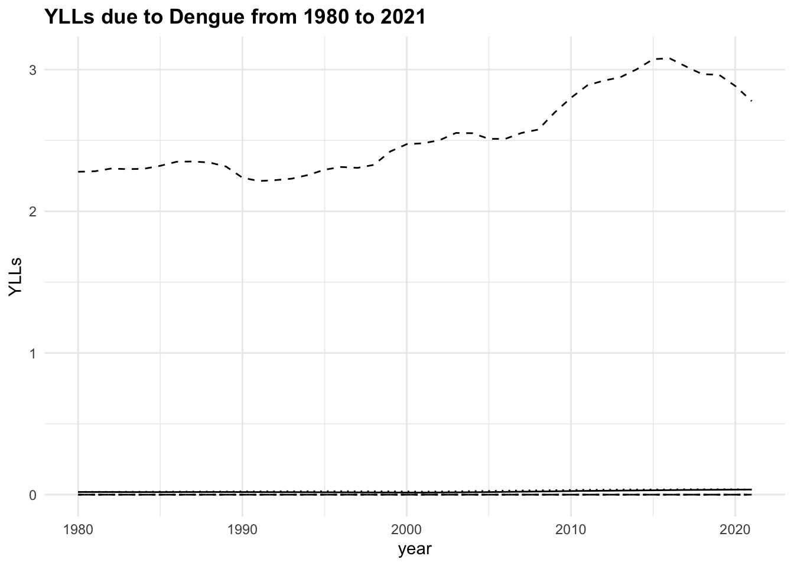
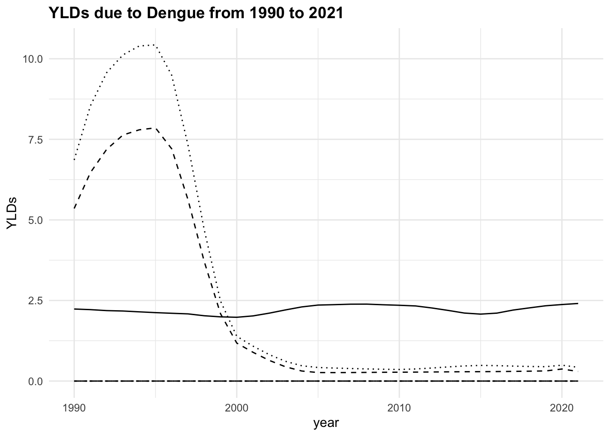
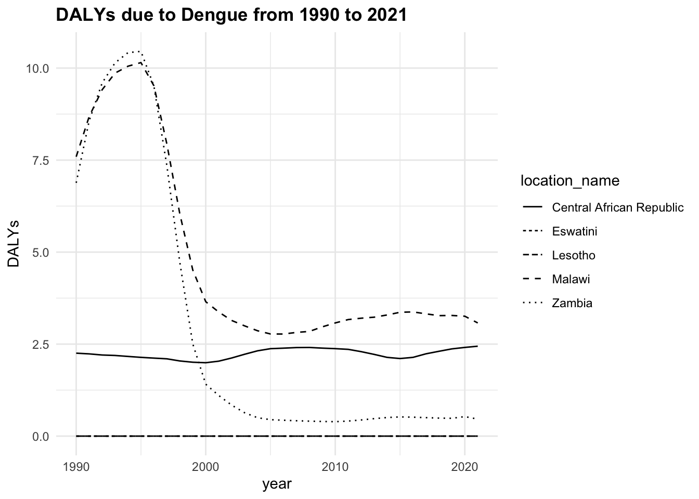
The trend of the metrics in some locations is quite flat ranging around zero, while in others it is more evident. YLLs are the leading cause of DALYs, but YLDs are also contributing to the burden of disease.
We will focus on DALYs due to Dengue in three locations, Malawi, Zambia, and Central African Republic from 1990 to 2016 (26 years). The data from 2017 to 2021 is not included in the analysis and held out to be used as new data for testing the model’s performance, as shown in Chapter 9.
Data are preprocessed to remove missing values, the values of DALYs only appeared in 1990, and then grouped by location id; the location name is removed.
dalys_dengue <- hmsidwR::infectious_diseases %>%
arrange(year) %>%
filter(cause_name == "Dengue",
year<=2016,
!location_name %in% c("Eswatini", "Lesotho")) %>%
drop_na() %>%
group_by(location_id) %>%
select(-location_name, -cause_name)
dalys_dengue %>%
head()
#> # A tibble: 6 × 8
#> # Groups: location_id [3]
#> year location_id Deaths DALYs YLDs YLLs Prevalence Incidence
#> <dbl> <dbl> <dbl> <dbl> <dbl> <dbl> <dbl> <dbl>
#> 1 1990 182 0.0330 7.59 5.35 2.24 33.7 560.
#> 2 1990 191 0.00135 6.88 6.86 0.0229 42.4 713.
#> 3 1990 169 0.000760 2.25 2.24 0.0186 13.1 222.
#> 4 1991 191 0.00135 8.57 8.54 0.0230 52.5 884.
#> 5 1991 182 0.0327 8.68 6.47 2.21 40.9 681.
#> 6 1991 169 0.000760 2.23 2.22 0.0185 13.0 218.The {mlr3} is a meta-package particularly useful for its syntax, as it guides the user through the machine learning steps by providing a consistent naming convention. It is also useful for benchmarking different models. In addition to the {mlr3} package, the {mlr3learners}, {mlr3viz}, and {mlr3verse}, and {data.table} packages are also loaded. Each of these packages provides additional functionality for machine learning tasks. More information on these packages can be found in the respective documentation, and further details can be found in the mlr3 book. In this example we use two types of models:
regr.cv_glmnet: A cross-validatedglmnetmodel with an alpha of 0.5 and a lambda of 0.1.regr.xgboost: Anxgboostmodel with 1000 rounds, a maximum depth of 6, and an eta of 0.01. For this model the{xgboost}package is required.
library(mlr3)
library(mlr3learners)
library(mlr3viz)
library(mlr3verse)
library(data.table)
# library(xgboost)Define the task, where the id, backend, and target are specified. The backend is the data that will be used for training the models. The task is the interface between the data and the learners; in this use-case the preprocessing steps are done beforehand, by removing missing and categorical values.
task <- TaskRegr$new(id = "DALYs",
backend = dalys_dengue,
target = "DALYs")
task$data() %>%
select(year, DALYs, YLDs, YLLs) %>%
head()
#> year DALYs YLDs YLLs
#> <num> <num> <num> <num>
#> 1: 1990 7.591334 5.354059 2.23727545
#> 2: 1990 6.882299 6.859449 0.02285062
#> 3: 1990 2.253677 2.235120 0.01855750
#> 4: 1991 8.565327 8.542325 0.02300233
#> 5: 1991 8.682844 6.469088 2.21375567
#> 6: 1991 2.234340 2.215861 0.01847933The learners are the model’s specifications. A full list of learners can be obtained with the function as.data.table(mlr_learners).
learner_cv_glmnet <- lrn("regr.cv_glmnet",
alpha = 0.5,
s = 0.1)
learner_xgboost <- lrn("regr.xgboost",
nrounds = 1000,
max_depth = 6,
eta = 0.01)Then define a resampling strategy to estimate the generalization performance, then create a benchmark design to compare different learners:
resampling <- rsmp("cv", folds = 5)
design <- benchmark_grid(tasks = task,
learners = list(learner_cv_glmnet,
learner_xgboost),
resamplings = resampling)
design
#> task learner resampling
#> <char> <char> <char>
#> 1: DALYs regr.cv_glmnet cv
#> 2: DALYs regr.xgboost cvRun the benchmark:
set.seed(19052024)
bmr <- benchmark(design,
store_models = TRUE,
store_backends = TRUE)To access the content of an object such as bmr, use the $ operator, or for more options use the View() function.
The score() function is used to extract the performance metrics of the models, in this case the mean squared error (MSE) is used.
bmr$score()[, .(learner_id,
task_id,
iteration,
regr.mse)]
#> learner_id task_id iteration regr.mse
#> <char> <char> <int> <num>
#> 1: regr.cv_glmnet DALYs 1 0.023134768
#> 2: regr.cv_glmnet DALYs 2 0.011686804
#> 3: regr.cv_glmnet DALYs 3 0.008018635
#> 4: regr.cv_glmnet DALYs 4 0.007781078
#> 5: regr.cv_glmnet DALYs 5 0.006527998
#> 6: regr.xgboost DALYs 1 0.119344375
#> 7: regr.xgboost DALYs 2 0.491756024
#> 8: regr.xgboost DALYs 3 0.081573517
#> 9: regr.xgboost DALYs 4 0.029895320
#> 10: regr.xgboost DALYs 5 0.025838211Here we see the results of the benchmark, the regr.mse is the mean squared error of the models. The regr.rmse and regr.mae are also available.
set.seed(349)
autoplot(bmr, measure = msr("regr.rmse"))
autoplot(bmr, measure = msr("regr.mae"))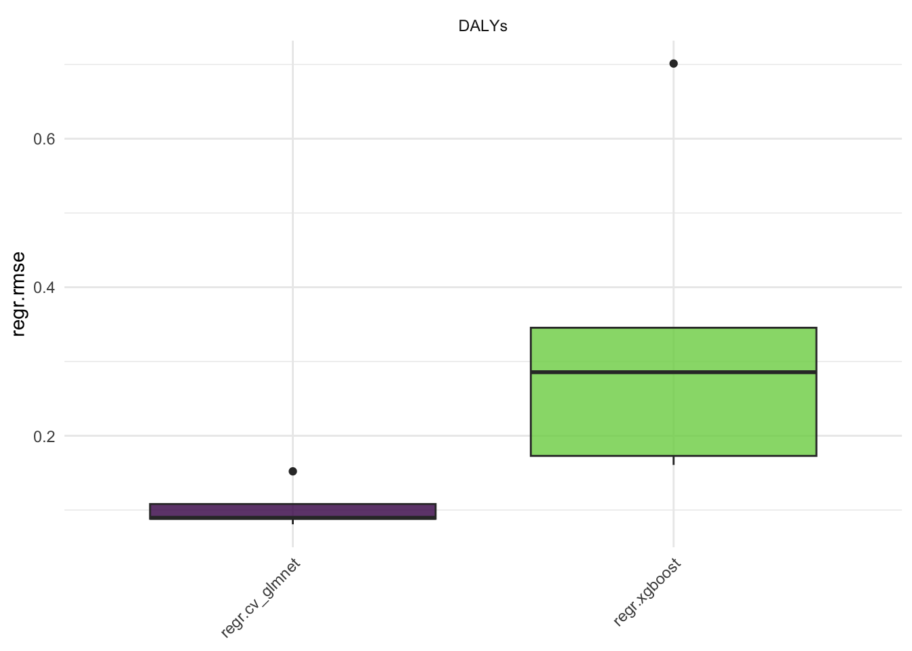
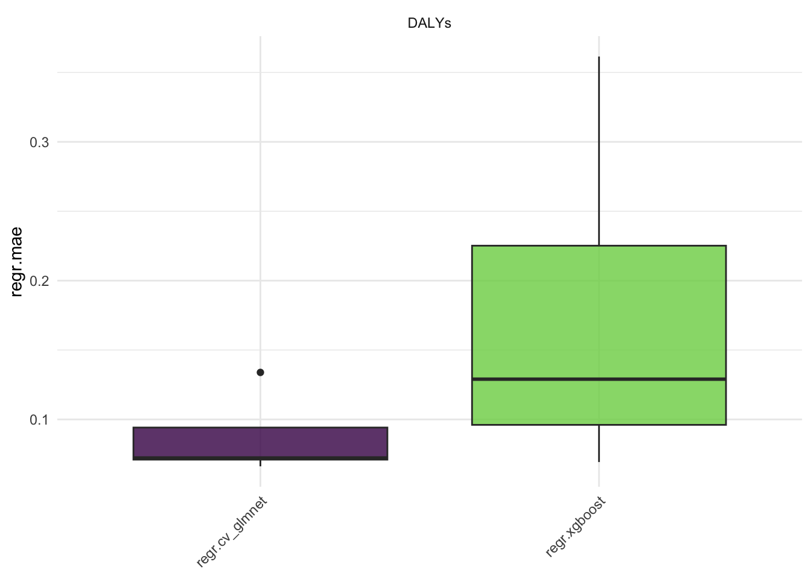
Aggregate the results:
measures <- msrs(c("regr.rmse", "regr.mae"))
aggr <- bmr$aggregate(measures)rr1 <- aggr$resample_result[[1]]
rr2 <- aggr$resample_result[[2]]Create a data frame with the results, for plotting with ggplot2, consider data are shuffled in the resampling process, and need to be reordered:
regr.cv_glmnet <- as.data.table(rr1$prediction()) %>%
mutate(learner = "regr.cv_glmnet") %>%
# order data to match the original order
cbind(rr1$task$data()[rr1$prediction()$row_ids])
regr.xgboost <- as.data.table(rr2$prediction()) %>%
mutate(learner = "regr.xgboost") %>%
# order data to match the original order
cbind(rr2$task$data()[rr2$prediction()$row_ids])
dat <- rbind(regr.cv_glmnet, regr.xgboost)Plot the results:
dat %>%
ggplot(aes(x = truth, y = response,
group = learner)) +
geom_abline() +
geom_point(aes(color = learner)) +
scale_color_manual(values = c("regr.cv_glmnet" = "navy",
"regr.xgboost" = "orange")) +
facet_wrap(~learner) +
labs(x = "Truth", y = "Response") +
theme(legend.position = "none")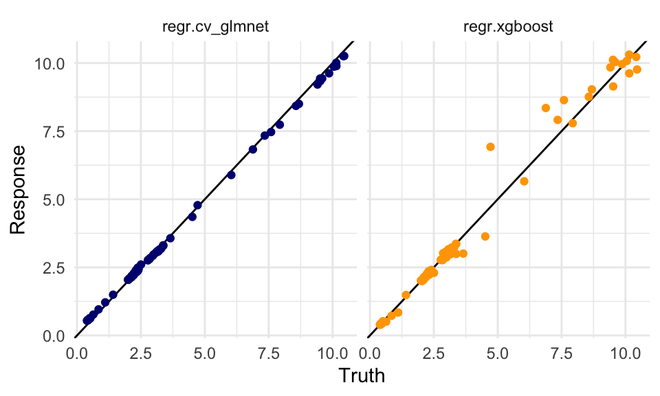
dat %>%
group_by(location_id, learner) %>%
ggplot(aes(x = year)) +
geom_point(aes(y = truth),
size = 0.2) +
geom_line(aes(y = response,
linetype = learner),
linewidth = 0.3) +
# create facets for each location and
# rename the location_id with the location_name
# with the labeller function
facet_wrap(vars(location_id),
labeller = as_labeller(c(`182` = "Malawi",
`191` = "Zambia",
`169` = "Central African Republic")),
scales = "free") +
labs(title = "Dalys due to Dengue 1990-2016: Truth vs Responses",
caption = "Scale Free - Dots represent the Truth Values",
x = "Year", y = "DALYs", linetype = "Model") +
theme(plot.title = element_text(hjust = 0.5))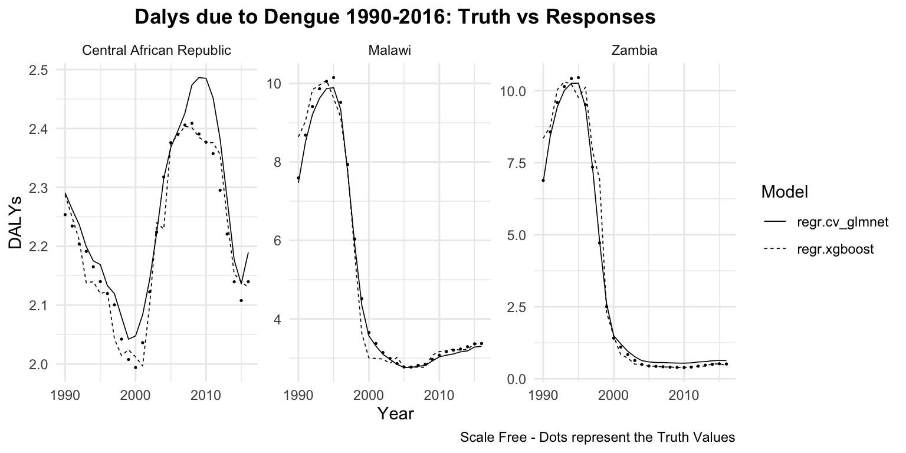
In the next Chapter 9 we will see an application of these two models on remaining years from 2017 to 2021, to test the model performance as it was on new data.
8.3.2 Example: DALYs due to Rabies with H2O
The following example shows how to use the {h20} r package for running H2O via its REST API.
options(timeout = 6000)
install.packages("h2o")library(h2o)# Initialize the H2O cluster
h2o.init()We use the rabies dataset from the {hmsidwR} package, which has been used in Section 7.4. The dataset contains information on the number of deaths and dalys due to rabies in different countries and regions. The dataset is preprocessed to remove unnecessary columns and pivoted to create a wide format with the relevant health metrics.
library(tidyverse)
rabies <- hmsidwR::rabies %>%
select(-upper, -lower) %>%
pivot_wider(names_from = measure, values_from = val) %>%
filter(cause == "Rabies",!is.na(DALYs)) %>%
rename(dx_rabies = Deaths, dalys_rabies = DALYs) %>%
select(-cause) %>%
mutate(across(where(is.character), as.factor))
rabies %>% head
#> # A tibble: 6 × 4
#> location year dx_rabies dalys_rabies
#> <fct> <dbl> <dbl> <dbl>
#> 1 Asia 1990 0.599 33.1
#> 2 Asia 1992 0.575 31.9
#> 3 Asia 1994 0.554 30.7
#> 4 Asia 1991 0.585 32.3
#> 5 Asia 1995 0.551 30.5
#> 6 Asia 1997 0.502 27.9The h2o_rabies object is created by importing the rabies data frame to H2O with the as.h2o() function.
# Upload data to H2O
h2o_rabies <- as.h2o(rabies)Set a response variable and predictors.
response <- "dalys_rabies"predictors <- setdiff(names(rabies), response)# Split data into training and testing sets
splits <- h2o.splitFrame(h2o_rabies,
ratios = 0.8,
seed = 1234)
train <- splits[[1]]
test <- splits[[2]]Train three models:
- a linear regression model (family = “gaussian” or standard ordinary least squares (OLS) linear regression)
- a GBM model (Gradient Boosting Machine)
- a random forest model
model_lm <- h2o.glm(x = predictors,
y = response,
training_frame = train,
family = "gaussian")
model_gbm <- h2o.gbm(x = predictors,
y = response,
training_frame = train,
validation_frame = test,
ntrees = 1000,
max_depth = 6,
learn_rate = 0.01,
seed = 1234)
model_rf <- h2o.randomForest(x = predictors,
y = response,
training_frame = train,
ntrees = 100,
max_depth = 20,
seed = 1234)Evaluate the models with the h2o.performance() function to evaluate the performance of the models by calculating the metrics.
perf_lm <- h2o.performance(model_lm, newdata = test)
perf_gbm <- h2o.performance(model_gbm, newdata = test)
perf_rf <- h2o.performance(model_rf, newdata = test)Then extract the RMSE and MAE metrics:
h2o.rmse(<model>)
h2o.mae(<model>)#> model rmse mae
#> 1 lm 2.732294 2.2957256
#> 2 gbm 1.373425 0.9379672
#> 3 rf 1.399058 1.1779029The best model is the one with the lowest RMSE and MAE values. In this case, the gbm model is the best performing model among the three.
To predict on the test data, we use the gbm model in the h2o.predict() function:
# Predict on test data
predictions <- h2o.predict(model_gbm,
newdata = test)Convert the predictions and actual values to data frames for plotting:
pred_df <- as.data.frame(predictions)
actual_df <- as.data.frame(test)# Combine actual and predicted values
results_df <- data.frame(Actual = actual_df[, response],
Predicted = pred_df[, 1])The check for normality of the residuals is done with the qqnorm() and qqline() functions. The residuals are calculated as the difference between the actual and predicted values.
# Calculate residuals
results_df$Residuals <- results_df$Actual - results_df$Predicted
# Plot Residuals vs Predicted
ggplot(results_df,
aes(x = Predicted, y = Residuals)) +
geom_point(color = "navy", alpha = 0.5) +
geom_hline(yintercept = 0,
color = "orange", linetype = "dashed") +
labs(title = "Residuals vs Predicted Values",
x = "Predicted", y = "Residuals")
# Normality Test of the Residuals
qqnorm(results_df$Residuals)
qqline(results_df$Residuals, col = 2)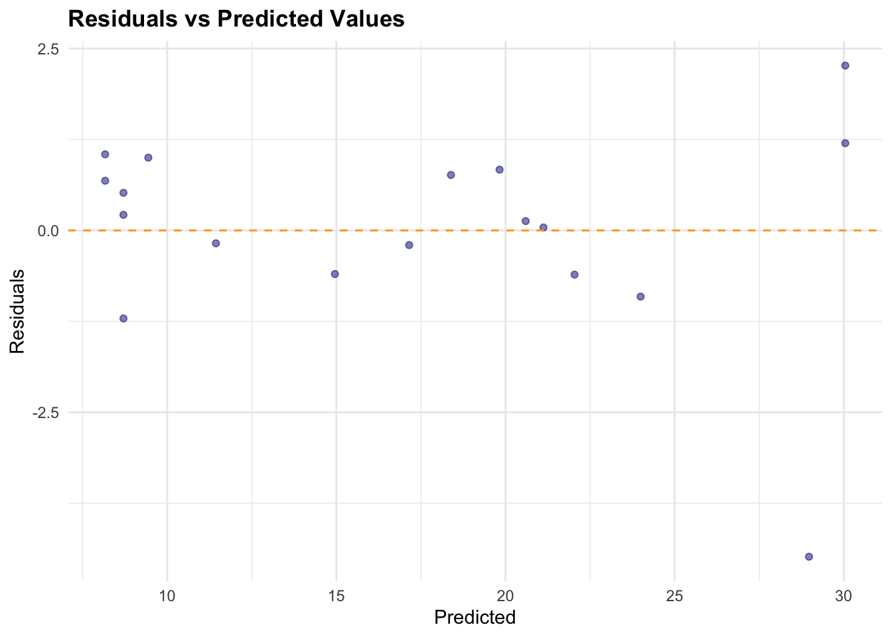
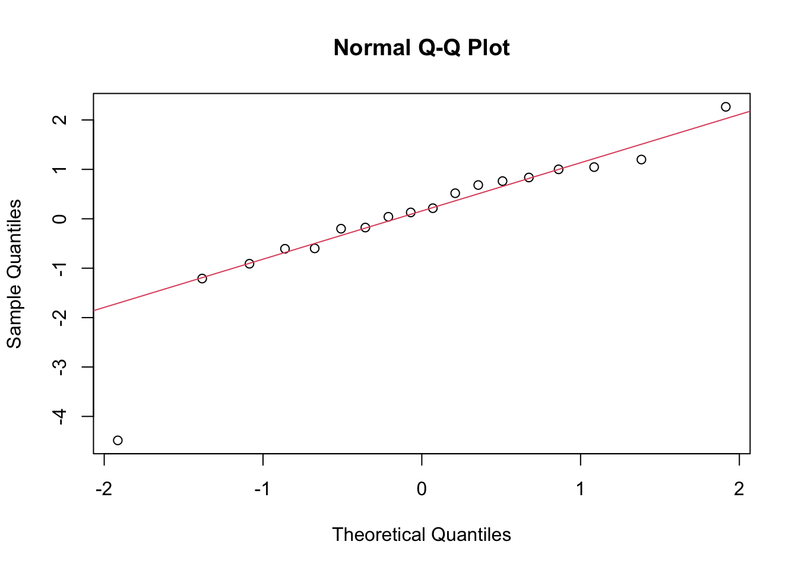
# Adding time to the results data frame
results_df$Time <- actual_df$year# Plot Actual vs Predicted
p1 <- ggplot(results_df,
aes(x = Actual, y = Predicted)) +
geom_point(color = "blue", alpha = 0.5) +
geom_abline(slope = 1, intercept = 0,
color = "red", linetype = "dashed") +
labs(title = "Actual vs Predicted Values",
x = "Actual", y = "Predicted")
# Plot Actual vs Predicted over time
p2 <- ggplot(results_df, aes(x = Time)) +
geom_line(aes(y = Actual,
color = "Actual"),
linetype = 1) +
geom_line(aes(y = Predicted,
color = "Predicted"),
linewidth = 1,
linetype = "dashed") +
labs(title = "Actual vs Predicted Values Over Time",
x = "Time", y = "Value") +
scale_color_manual(name = "Legend",
values = c("Actual" = "navy",
"Predicted" = "orange"))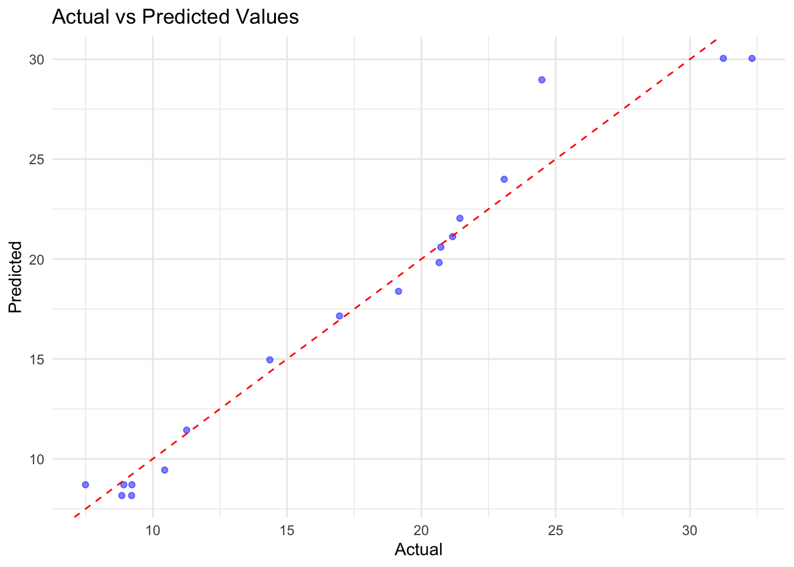
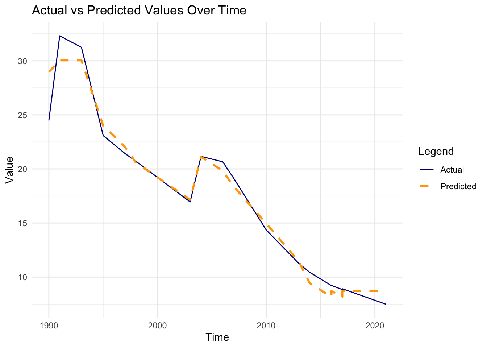
In conclusion, the H2O GBM model performed well on the rabies dataset, with a low RMSE and MAE. The residuals were normally distributed, indicating that the model’s predictions were accurate. The actual vs predicted values plot shows a good fit, and the time series plot indicates that the model captured the trend in the data.
h2o.shutdown(prompt = FALSE)8.3.3 Example: General Infection with Keras
The following example shows how to use the {keras}, a package that facilitates the creation and training of neural networks and deep learning models. It provides a user-friendly interface to build models, whether they are simple neural networks or complex deep learning architectures, particularly useful for handling network connections. More detailed explanation of how a neural network works can be found in
In this case the SEIR model (susceptible, exposed, infected and recovered) is used, as seen in Chapter 6 chapter, to simulate the spread of a general infection in a population of 1000 individuals over 160 days. For some types of infections, the latency period is significant as it is the time during which infected individuals are not yet infectious themselves. During this period the individual is in compartment E (for exposed).
Once the simulation of the infected population is done, the deep learning model acts by training social media data to predict the probability of infection based on social media activity. The model results are then used to adjust the SEIR parameters based on the predicted infection status and re-run again on new data.
install.packages("keras3")
keras3::install_keras(backend = "tensorflow")library(keras3)
library(deSolve)
library(ggplot2)To setup the SEIR compartments we start by defining the differential equations built by considering the rates of change of each compartment (S,E,I,R), the parameters (\beta,\sigma,\gamma), the initial state value of the population (N = 1000), and the length of time in days (t=160). Finally the ode() function is used to solve the differential equations and provide the output dataset.
SEIR <- function(time, state, parameters) {
with(as.list(c(state, parameters)), {
# Differential equations
dS <- -beta * S * I / N
dE <- beta * S * I / N - sigma * E
dI <- sigma * E - gamma * I
dR <- gamma * I
# Return the rates of change
list(c(dS, dE, dI, dR))
})
}
# Parameters
parameters <- c(beta = 0.3, # Infection rate
sigma = 0.2, # Incubation rate
gamma = 0.1 # Recovery rate
)
# Initial state values
N <- 1000
initial_state <- c(S = 999, E = 1, I = 0, R = 0)
# Time points
times <- seq(0, 160, by = 1)
# Solve the model
output <- ode(y = initial_state,
times = times,
func = SEIR,
parms = parameters
)
# Convert output to a data frame
output <- as.data.frame(output)The social media data is simulated and consists of 1000 individuals (n) over 10 (p) days, with an infection vector, and 10 features (x_i), including social distancing adherence, mask usage (always, sometimes, never), hand hygiene frequency (times per day washing or sanitizing), work or study environment (remote versus in-person), participation in gatherings (number of gatherings attended recently), and contact tracing status (exposure to a confirmed case), among others. All values are standardized obtained from a normal distribution.
set.seed(123)
n <- 1000 # number of samples
p <- 10 # number of features
# Generate random features and labels
social_features <- matrix(rnorm(n * p),
nrow = n, ncol = p)
infection_labels <- sample(0:1, n, replace = TRUE)
# Combine into a data frame
social_data <- data.frame(social_features)
social_data$infection <- infection_labels
social_data[1:4,c(1:3,11)]
#> X1 X2 X3 infection
#> 1 -0.56047565 -0.99579872 -0.5116037 0
#> 2 -0.23017749 -1.03995504 0.2369379 0
#> 3 1.55870831 -0.01798024 -0.5415892 0
#> 4 0.07050839 -0.13217513 1.2192276 1Define the model by using the keras_model_sequential() function, and add layers with the layer_dense() and layer_activation() functions. On each layer the model will apply a transformation to the input data, and the activation function will introduce non-linearity to the model.
Here we use a simple model with just two layers and a ReLU and a Sigmoid as activation functions. These functions have specific shapes that allow the model to learn complex patterns in the data. Any time one layer is done the output is passed to the next layer.
Although the layer_dropout() is not actually used in this application, it could be added to the model as a layer that drops out output results under specified requirements. The function is used to prevent overfitting by randomly setting a fraction of input units to zero during training.
The model concludes with one more layer_dense() with activation used to finally activate the output with a tailored function. In this case a sigmoid, but also a softmax function could be used.
The decision of which activation function to use depends on the task type (classification or regression), or due to performance considerations, such as the ReLU is computationally simple and efficient. The sigmoid function is used in binary classification problems, where the output is a probability between 0 and 1. The softmax function is used in multi-class classification problems, where the output is a probability distribution over multiple classes. Sometimes, you try a few and see which works best through cross-validation or tuning.
Given an input vector x=[x_1,x_2,...,x_p] of size p, the model is composed of:
- First Dense Layer Transformation:
z^{(1)}=\sum_{i=1}^p{W_i^{(1)} x_i+b^{(1)}} \tag{8.1}
where W \epsilon R^{1\times p} are the weights, b is the bias, and z is the output.
- First Activation (ReLU):
a^{(1)}=ReLu(z^{(1)})=max(0,z^{(1)}) \tag{8.2}
- Second Dense Layer Transformation:
z^{(2)}=\sum_{i=1}^p{W_i^{(2)} x_i+b^{(2)}} \tag{8.3}
- Output Activation (Sigmoid):
a^{(2)}=Sigmoid(z^{(2)})= \frac{1} {1+e^{-z^{(2)}}} \tag{8.4}
model <- keras_model_sequential(input_shape = c(p))
# simple model
model %>%
layer_dense(units = 1) %>%
layer_activation("relu") %>%
layer_dense(units = 1, activation = "sigmoid")The model is then compiled using the compile() function which with the use of a loss function optimises the results matching them against a minimum required value, and specified metrics to reduce the error.
y= \hat{y} + \epsilon \tag{8.5}
where y is the true value, \hat{y} is the predicted value, and \epsilon is the error.
The loss function is used to measure how well the model is performing, in this case a binary crossentropy loss function is used, to match the difference between original data and the model output, and apply model adjustments in case the difference is too high. The formula for binary crossentropy is:
L(y,\hat{y})=-\frac{1}{n}\sum_{i=1}^n{y_i \log(\hat{y}_i)+(1-y_i) \log(1-\hat{y}_i)} \tag{8.6}
where L is the loss, y is the true value, \hat{y} is the predicted value, and n is the number of samples.
The optimizer_adam() function, used to update the model’s weights during training, in Keras specifies the use of the Adaptive Moment Estimation (Adam) optimization algorithm for training a neural network. It updates the parameters of the neural network.
Then finally, the model is evaluated on performance with the accuracy metric.
# Compile the model
model %>% compile(loss = "binary_crossentropy",
optimizer = optimizer_adam(),
metrics = c("accuracy"))Once the model is defined and compiled, the model is then trained using the fit() function with the training data, number of epochs, batch size, and validation split specified. The number of epochs is the number of times the model will go through the training data, the batch size is the number of samples used in each training step, and the validation split is the fraction of the training data that will be used for validation.
A particular object that is created in this type of models is the history object, which is used to store the training history of the model. This object contains information about the loss and accuracy of the model on the training and validation data during training.
history <- model %>% fit(x = as.matrix(social_data[, 1:p]),
y = social_data$infection,
epochs = 30,
batch_size = 128,
validation_split = 0.2
)The subsequent times the history object is created, the model is trained with half the number of epochs and batch size. And this specifications can further be adjusted as needed.
history2 <- model %>% fit(x = as.matrix(social_data[, 1:p]),
y = social_data$infection,
epochs = 30 / 2,
batch_size = 128 / 2,
validation_split = 0.2
)Here are two attempts of the trained model with different parameters, the first with 30 epochs and a batch size of 128, and the second with 15 epochs and a batch size of 64. The training history of both models is then plotted to compare their performance.
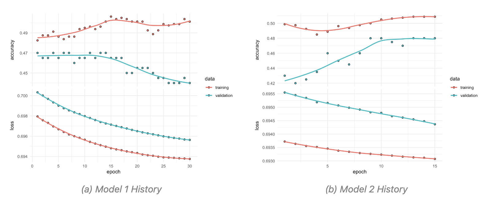
The model is then used to predict the probability of infection based on the social media data. The predictions are then converted to binary values using a threshold of 0.5, where values greater than 0.5 are classified as 1 (infected) and values less than or equal to 0.5 are classified as 0 (not infected).
new_social_data <- matrix(rnorm(p * 160),
nrow = 160, ncol = p)predicted_infections <- model %>%
predict(new_social_data)
predicted_infections <- ifelse(predicted_infections > 0.5, 1, 0)The adjustment is then done on the SEIR parameters based on predicted results. The beta parameter is adjusted by multiplying it by the mean of the predicted infections.
adjusted_parameters <- parameters
adjusted_parameters["beta"] <-
adjusted_parameters["beta"] * (1 + mean(predicted_infections))The SEIR model is then re-run with the adjusted parameters to simulate the spread of the infection in the population.
adjusted_output <- ode(y = initial_state,
times = times,
func = SEIR,
parms = adjusted_parameters
)
# Convert output to a data frame
adjusted_output <- as.data.frame(adjusted_output)The output shows the impact of the social media adjustments on the spread of the infection.
ggplot() +
geom_line(data = output,
aes(x = time, y = I,
color = "Original Infections")) +
geom_line(data = adjusted_output,
aes(x = time, y = I,
color = "Adjusted Infections")) +
labs(title = "SEIR Model - Social Media Adjustments",
y = "Infectious Population",
color = "Scenario") +
scale_color_manual(values = c(
"Original Infections" = "navy",
"Adjusted Infections" = "orange"))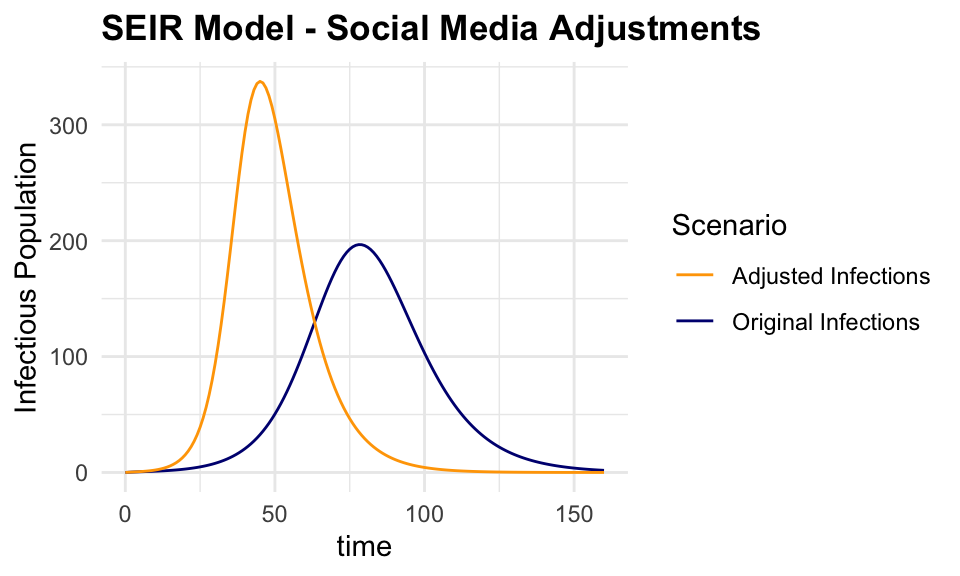
This is just a simple example of how the {keras} package can be used to train a deep learning model on social media data to predict the probability of infection. The model can be tested on using different layers, more specifications are found in the keras documentation.
8.4 How to Find a New R-Package
Finding a new R-package can be a daunting task, given the vast number of packages available on CRAN and other repositories. A strategy to identify relevant packages for your specific needs would be to use some prebuilt packages which provide search functionalities.
For example, the package_search() function from the {pkgsearch} package takes a text string as input and uses basic text mining techniques to search all of CRAN.
library(tidyverse) # for data manipulation
library(dlstats) # for package download stats
library(pkgsearch) # for searching packagesWe search for packages related to “excess of mortality” and “infectious diseases”:
excessPkg <- pkg_search(query = "excess of mortality", size = 200)head(excessPkg$maintainer_name)
#> [1] "Rafael A. Irizarry" "Mathieu Fauvernier" "Juste Goungounga"
#> [4] "Yohann Foucher" "Joonas Miettinen" "Rob Hyndman"excessPkgShort <- excessPkg %>%
filter(maintainer_name != "ORPHANED", score > 100) %>%
select(score, package, downloads_last_month) %>%
arrange(desc(downloads_last_month))
head(excessPkgShort)
#> # A data frame: 5 × 3
#> score package downloads_last_month
#> * <dbl> <chr> <int>
#> 1 183. popEpi 1867
#> 2 682. survPen 1172
#> 3 274. RISCA 483
#> 4 1009. excessmort 317
#> 5 673. xhaz 180excess_shortList <- excessPkgShort$packageexcess_downloads <- cran_stats(excess_shortList)ggplot(excess_downloads, aes(end, downloads,
group = package,
color = package)) +
geom_line() +
geom_point(aes(shape = package)) +
scale_y_continuous(trans = "log2")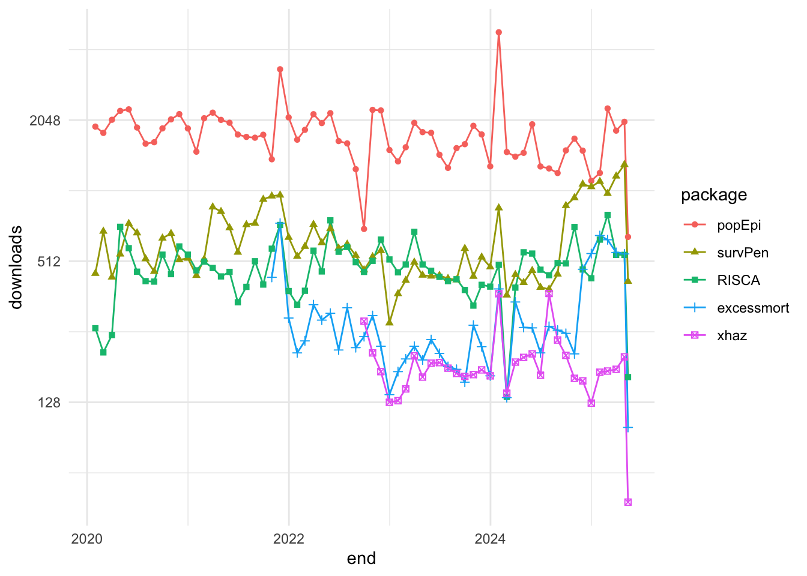
Another example is the {cranly} package, which provides a simple interface to search for packages on CRAN. The package provides comprehensive methods for cleaning up and organising the information in the CRAN package database, making it easier to find relevant packages for your specific needs.
library(cranly)
p_db <- tools::CRAN_package_db()
package_db <- clean_CRAN_db(p_db)package_db %>%
filter(grepl("infectious diseases",
description,
ignore.case = TRUE)) %>%
select(package)
#> package
#> 1 EpiDynamics
#> 2 epitweetr
#> 3 pempi
#> 4 rts2
#> 5 seqDesign
#> 6 SMITIDstruct
#> 7 spaero
#> 8 ssrnMax Kuhn Silge and Julia, Tidy Modeling with r, n.d., https://www.tmwr.org/.↩︎
Max Kuhn, The Caret Package, n.d., https://topepo.github.io/caret/.↩︎
“Mlr-Org,” n.d., https://mlr-org.com/.↩︎
Forecasting: Principles and Practice (3rd Ed), n.d., https://otexts.com/fpp3/.↩︎
“R-INLA Project - What Is INLA?” n.d., https://www.r-inla.org/what-is-inla.↩︎